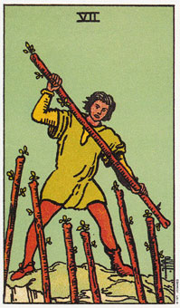

权杖七暗示经由坚韧不拔而获得的成功。
如同权杖5，权杖七是一张代表冲突的牌。所有可见的活动的目的本身可能就是战争，因为在纸牌上的人，带有一种决心和激情的表情。保卫他的领土虽然很坚信，但这仍在他的掌握之中，而且他也许喜爱这样的挑战。别忘了，权杖类型喜欢搏斗，而且倾其所有，这会令那些火性的人们感到振奋。这种争斗让权杖类型的人觉得自己活着。权杖七可能暗示你周围的人反对你的想法或计划，但你继续努力、不放弃一定会成功。
塔罗牌中所有的七都有“不要放弃”的意义。虽然挑战比以前更大，权杖七表示你会更投入眼前的工作。
大体上的意义
权杖七表示你需要更大的挑战。在生意上，它表示开拓州际或海外市场的行动。新的市场将带给你新的挑战与难题，等你一一去克服。它也可以表示，现在正是你事业多元化的时机。
权杖七的讯息是“不要放弃”。继续努力前进，你将得到成功的回报。你投注于完成目标的体力与行动，将是值得的。
权杖七也可以表示，在某个时候，你做两份工作，以便存钱到海外度假、教房子的定金。如果你努力，最后你将得到这些报酬。
两性关系上的意义
在两性关系的算法中，权杖七可以表示，在某种处境中，伴侣中的一位市场为他们的信念或行动辩护。简单地说，他表示在你们关系中出现了更大的挑战。例如，一个新生婴儿会增强紧张程度，出现挑战，直到小孩长大而你们的家庭以适应这样的改变。
权杖七同时也代表两性关系将以到达更高层的承诺形式带来更大的挑战。也许你不曾经历如此程度的承诺，所以一开始会觉得这是挑战。
倒立的权杖七
倒立的权杖七表示你的火少得太小，而无法应付你所面对的挑战。你可能走克服反对的困难，而陷入焦虑、优柔寡断或是忧郁。
这可能是你从新的市场或专投资中获利的机会，但你受阻与你以往做事的方法。
倒立的权杖七暗示这是放弃旧态度的时机，尤其是那些限制你的旧态度。也许你是用过时的方法去应付新环境，或者是你还把自己当成往日年轻的你来看待。
塔罗牌中所有倒立的七含有“不要坚持”的意义。这张纸牌强调停止支持一个不合时宜的信仰体系的需要。它意味着不要迷恋过去。
如果你继续作你一直在做的事情，你将会得到你过去一直得到的东西。换句话说，如果你想要一个新的结果，那就试试新的方法。
倒立的权杖七指明要作出一个决定。当行动的方向决定后，权杖天生的自信会再度回复，以克服眼前的困难。